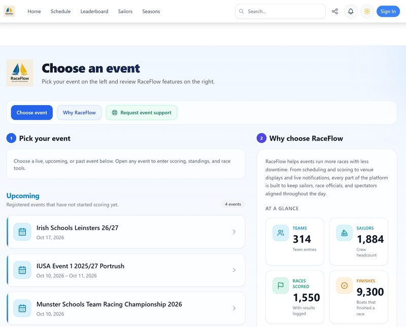
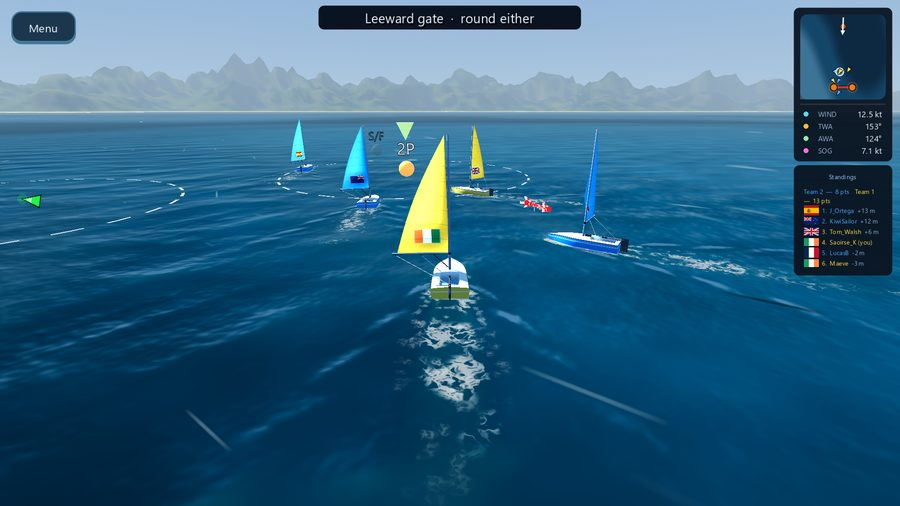

The scheduling system behind Irish team racing
I spotted the gap from inside the sport, built the fix, and now license it to clubs. It has run 19 regattas since August 2025.

Economics and Computer Science at Trinity College Dublin. RaceFlow has run 19 regattas. First Not Last is live on phone, in the browser, and on desktop.
A team racing regatta is a round robin of short races, often more than a hundred of them. RaceFlow schedules them, times them and publishes the results as they happen, so nobody has to shout them across the dinghy park.
I spotted the gap from inside the sport, built the fix, and now license it to clubs. It has run 19 regattas since August 2025.

Clubs open their event here for scoring, standings and race tools, from the Irish Schools Nationals to Nantucket Yacht Club, the first club in the United States to use it.
teamracing.xyzPairings, rotations and brackets are built automatically, with verification scripts covering the edge cases.
Standings update live as each race is scored, with push notifications for the teams you follow.
An online dinghy racing game with an umpire in every race. It is on the App Store, on Android, on Windows, Mac and Linux, and in the browser. One account keeps your rating across all of them.

Match races and team races, judged live on the Racing Rules of Sailing. You steer, the sails trim themselves, and fouls are cleared with penalty turns, the same way umpired racing works on the water.
Ranked racing, a leaderboard every night, and seven lessons if you have never held a tiller. Then 1v1, or teams of two or three.
Godot 4 / GDScript / Nakama / Docker
firstnotlast.siteiPhone and iPad on the App Store. Android, Windows, Mac and Linux. In the browser, nothing to install, and you race the same people as the apps.
From 21:00 to 22:00 Irish time the online modes become one Daily Racing queue. Three races in that hour put you on the night's board.
Steering, wind, penalty turns and match-race starts. The lessons need no account. Online racing is against other sailors.
A private training library for Trinity College Sailing. Members upload race clips, tag them and comment on debriefs. Every bad tack, preserved forever.
Next.js / Postgres / Cloudflare R2
Swipe through films with friends in real time. When everyone has liked the same one, it is a match, and the forty-minute debate is over.
React / Upstash Redis / Vercel / TMDB
A daily study log for the Racing Rules of Sailing 2025 to 2028. 118 cards in book order, with shared check-offs for the crew. Cheaper than losing a protest.
TypeScript / Vercel
Built and license the team racing scheduling system above.
Shipped the online racing game above, on the App Store, desktop, Android and in the browser.
An internship at EisnerAmper and the Davy Transition Year Programme.
Representing six clubs: Sailing, Equestrian, Golf, Ladies' Golf, Tennis and Netball.
Trinity College Dublin.
613 points in the Leaving Certificate, with H1s in Mathematics, Music, Physics, French and Spanish.
The national champion of every class races off to decide the best under-18 sailor in Ireland.
Racing for Trinity College Dublin.
West Kirby, the leading international team racing regatta.
Coached adults on J/70 keelboats and Melges 15 dinghies, and ran Sunday racing as Race Officer.
In summer 2025 I held the club's most senior coaching role, running its summer programme for 244 sailors, after two summers as an instructor.
Summer 2025
For internships, RaceFlow for your club, or First Not Last.